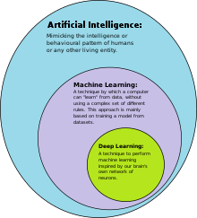

ML works through a constant loop of interpreting data, evaluating its success and optimising itself (aka a model). According to Dr Michael Tamir, ML models can be broken down into 3 components: “A decision process”, “An error function” and “an updating or optimisation process” (All are from M.Tamir, 26/6/2020).
A decision process is a set of a set of calculations and steps taken by a machine to find a pattern in its existing dataset to return an interpretative guess of the current data it is analysing.
An error function is a method the machine conducts to determine how confident their guess is correct (typically as a percentage). The machine uses this to compare its response to the accuracy of its own model.
An updating or optimisation process is an algorithm that interprets the machine’s failures (from the error function) and updates its decision process to ensure the failure isn’t repeated. The more data the machine processes the more optimised and accurate it is.
While similar in their core processing, machines can have different learning models depending on what type of data they must predict. Ed Burns from Tech Target states that “There are four basic approaches [to ML]: supervised learning, unsupervised learning, semi-supervised learning and reinforcement learning” [Burns, March 2021].
 Source: Javatpoint
Source: Javatpoint
Supervised learning is a model where “data scientists supply [the machine’s] algorithms with labelled training data” [Burns, March 2021] – which is often user data – to test how the machine’s algorithm correlates and classifies the data.
Unsupervised learning is the opposite approach to supervised learning where the machine has to detect its own patterns and relationships from a set of unlabelled data. This is used primarily when labelled data doesn’t exist or is too hard gather.
Semi-supervised learning is a combination of the previous two learning models. A smaller dataset is provided with labels for the machine to get a basic understanding of the classifications. However, they are also given the task to sort a set of unlabelled data into the existing labelled set.
Reinforcement learning is a model where a machine processes the data itself based off a set sequence. Data scientists then give it positive or negative cues [Burns, March 2021] based on its ability to process the data accurately. The machine then uses these cues to improve the way they process data.
Unlike the previous types of learning (aka “non-deep learning” [source IBM, n.d]), Deep learning is a model (which is a subset of machine learning) used to fully automate the data learning process without any form of human intervention. Machines using deep learning automatically process uncategorised and unfiltered data (including text and images) and determine its own categories. Deep learning is primarily used to process larger datasets along with being credited in “accelerating progress in areas such as computer vision, natural language processing and speech recognition” [IBM, n.d].

Source: Wikipedia